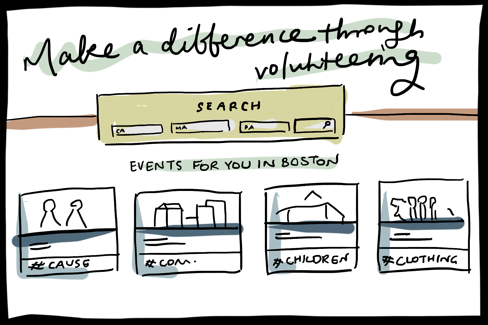

Design Brief
A bit about the problem we're trying to solve.
Currently, community volunteerism is viewed as, at best, an admirable societal duty, and at worst, a burdensome waste of time that doesn’t have real impact. (We’re looking forward to talking with people to get more thoughts than those just on our team, as of right now, these are just our assumptions.)
Community volunteers do not receive nearly as much attention and resources as massive national/international organizations. However, collectively they have a comparable impact on lives.
Many young people are required to volunteer in high school, but their obligation and access to volunteer opportunities decreases drastically when they start attending college. Based on our existing knowledge and research, a user-friendly platform that presents local volunteer opportunities in one place, or make an effort to sell them as fun, social, worthwhile activities, does not exist.
How will your project change the status quo and for whom?
We aim for community volunteerism to become a viable social activity that’s easy to coordinate, inexpensive and fun to do with friends.
Our platform will also hold people more accountable to actually participate in volunteer events they’re interested in, because we will likely incorporate an RSVP feature and the social energy of a group of friends going together.
The intended users are prospective volunteers (including those who have volunteered in the past and newcomers who don’t know where to start), and people who organize volunteer activities, who will post activities on the platform.
The platform will bring people together, increasing and changing the energy around community volunteering and decreasing the barrier to entry to community volunteerism.
What is (at least) one naïve design idea (rough sketch)?
Below is a rough sketch of an interface that would attract young people as users.
What information do you need to collect? How will you collect it? How will you meet your target users, or who can serve as effective proxies for them?
Through reaching out to local charities and non profits we can not only better understand how they recruit volunteers but also learn why and how people go about finding events to volunteer at.
We hope to learn the following through interacting with our group:- How do local community service organizations currently recruit people?
- How do they work? How are the retention numbers?
- What do people who are interested in volunteering currently do?
- What are some of the issues that those who run the volunteering orgs do?
How will your team work together to accomplish these goals (as well as your individual learning goals)?
We aim to create a web application (with possible mobile app integration) that requires software development, design, and user research. Through our learning goals we divided tasks that will propel our team forward toward a final product as well as complement our professional growth.
Below are the learning goals of the team members:- Ben is interested in software development for consumers and how to incorporate feedback effectively in development.
- Gracey wants to develop software for real people. She is excited to participate in the whole design stream from user research to wireframes to UI design to development and practice communicating with all parts of that team.
- Philipa wants to focus on outlining needs and specifications, completing user research, creating wireframes/user flows and gaining an understanding of the coding that goes into development.
- April wants to learn how to design and prototype interfaces. She also wants to gain experience with working with developers in the process.
- Sam wants to focus on user research and its direct relation to software development.